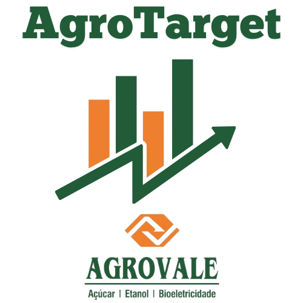

Números gerados diáriamente pela equipe de Qualidade Agrícola da Agrovale. Contabilizando os dados coletados e cálculos de cada atividade em campo.
Os dados apresentados são atualizados diariamente às 17h.